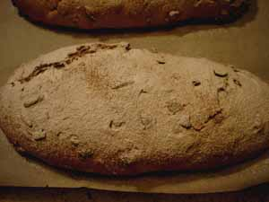

Mom makes stollen
Leland sent me an email yesterday asking me if I was on strike. I replied that no, I’m just frantically involved in Christmas preparations for a large family. Even though Leland won’t be with us on Christmas day itself, he and Nathan are arriving two days later, in time to help host our holiday open house. So far 103 people have said they will be happy to attend, and my husband and youngest son are beginning to wonder where we are going to put them all. I think it’s going to be a lot of fun, and expect it to look like that crazy beatnik party in Breakfast at Tiffany’s
Is it my imagination, or are people a little grimmer than usual this holiday season? I guess with the war and everything there isn’t too much to be cheerful about, but at least we could make an effort to be nice to each other, particularly at this time of year. Everywhere I have been in the last week or so I have been struck by how miserable folks have looked, and how little joy I have seen on faces. I have been doing my best to thank salespeople and wish them a merry Christmas and to stay positive, but I myself lost it yesterday at the post office when a woman who sat and blocked traffic while waiting to get into a handicapped space, then attempted to back up into my car. When she finally pulled into the space she jumped out of her car and started M-Fing me for not getting out of her way more quickly. I do realize that sometimes able-bodied looking folks have a legitimate reason for parking in handicapped spaces, but should they really be jumping out of their mini-vans and shrieking obscenities at people? So I violated the promise I made to myself about keeping the Christmas spirit, come what may, by giving her the finger before I drove off.

I like to make this stollen and give it to friends and neighbors for Christmas. It’s really good toasted. I clipped the recipe from a New York Times Magazine many years ago. Perhaps I should make amends to that lady at the post office by giving her a loaf.
Cranberry Stollen
- 2 packages active dry yeast
- 1/4 cup warm water
- 1/2 cup butter, softened, plus more for greasing bowl
- 7 ounces almond paste
- 1/2 cup sugar
- 2 eggs, at room temperature
- 1 cup whole milk, warmed slightly
- 5-7 cups all-purpose flour
- 1 teaspoon salt
- 1 teaspoon ground nutmeg
- 1 cup chopped blanched almonds (see note)
- 1 1/2 cups dried cranberries
- confectioners’ sugar, for garnish
Note: The recipe doesn’t call for toasting the almonds, but I always do toast them for about 5 minutes in a 350º oven.
1. Stir the yeast and water together and let stand until dissolved. Using an electric mixer, beat the butter and the almond paste together until light. Beat in the sugar. Add the eggs one at a time, mixing well after each addition.
2. Stir the milk into the yeast mixture. Very slowly stir the yeast mixture into the butter mixture. Add 1 cup of flour, the salt and nutmeg and mix well. Stir in the almonds and cranberries.
3. Begin adding flour 1 cup at a time until the dough becomes too difficult to stir. (I use my standing mixer to make this, starting with the paddle and switching to the dough hook about halfway.) Knead the dough by machine or by hand on a floured surface, adding just enough additional flour to make a soft but not sticky dough. Butter a large bowl, shape the dough into a ball and place into the bowl. Cover with a towel and let stand in a warm place until doubled in bulk, about 2 – 3 hours.
4. Punch down the dough and divide into the number of loaves you are making, either 2 large or 4 smaller. Shape by pressing the dough out into a long oblong shape and folding each of the long sides over toward the middle to overlap and press down firmly.
5. Preheat oven to 350º. Place the loaves on a baking sheet as far apart as possible. Cover with a towel and let rise for 45 minutes. Bake until bread sounds hollow when tapped on the bottom, about 45 minutes. Cover with foil if it is browning too quickly. Cool on a rack. Sift with confectioners’ sugar before serving.
Comments
Thanks for this recipe, Mom! I was starting to wonder what you were up to as well.
I send my mom Stollen every year, usually from someplace different just for variety. This year it was Zingerman’s. It should arrive at her house today but she will wait until Christmas to try it.
Next year, from the new kitchen, I will try to make my own. Perhaps that will be enough to get my mom to come to our house for Christmas. If grandbabies aren’t enough of a lure, homemade stollen should do the trick.
you are not imagining it. i swear people are in a worse mood this year than i remember… but i’m sure the stollen put all of your guests in the holiday mood :D
103 people! That’s a lot of party preparation.
Funny post. I had a good chuckle over your incident at the post office.
Add a comment